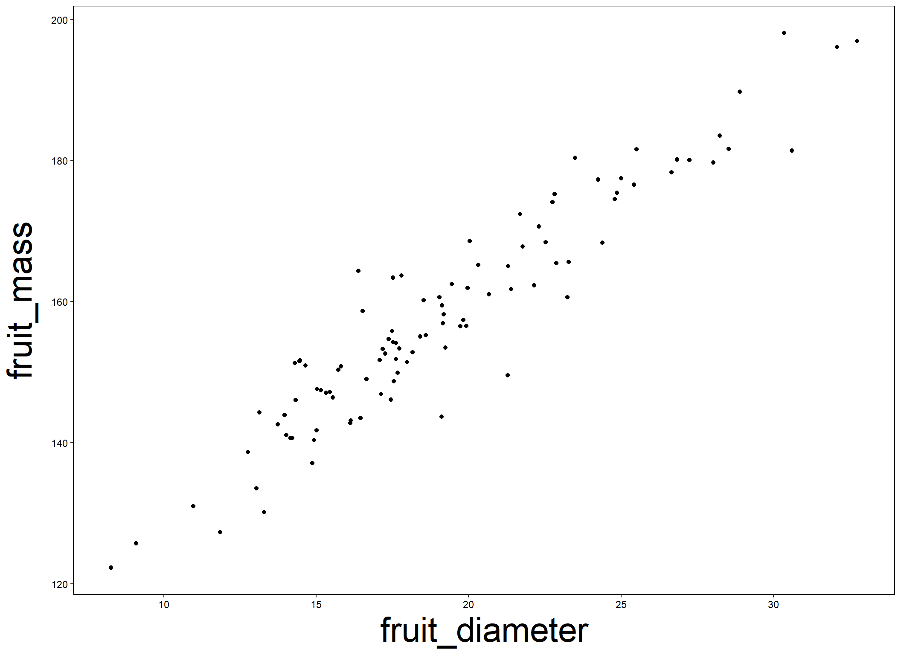
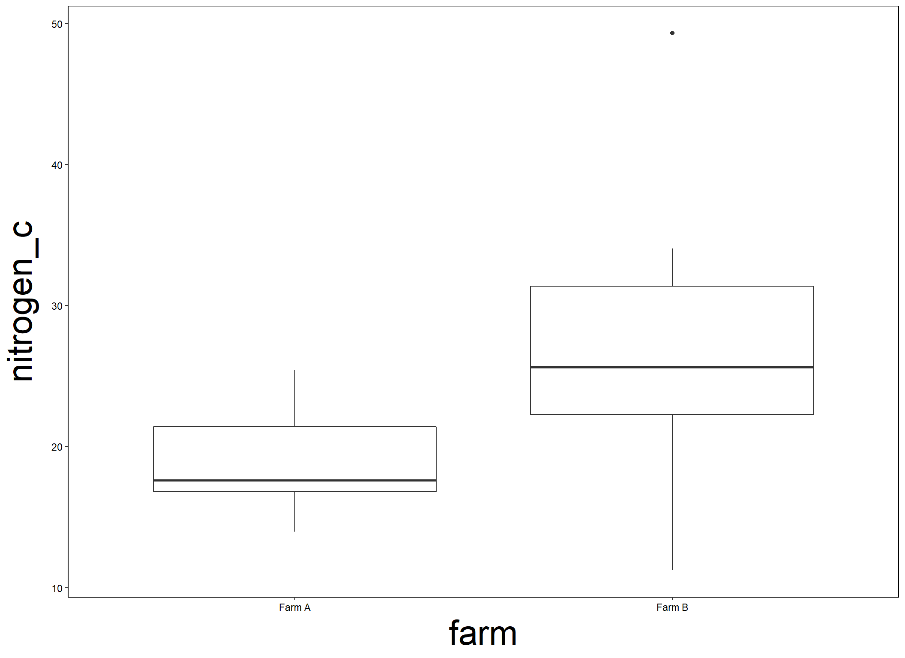

Session #4: Introduction to linear models
Guy F. Sutton
Centre for Biological Control
Rhodes University, South Africa
Email: g.sutton@ru.ac.za
Linear models
- Have you heard of
t-test,ANOVA,linear regression,ANCOVA, ect???- These are all linear models
- In fact, these models all fall under the umbrella of a General Linear Model (GLM)
- So, I want you to forget about the
t-test,ANOVA,linear regression,ANCOVA… - All we will be discussing in this course are General Linear Model’s (GLMs)
- So, I want you to forget about the
How do they work?
- They assume a linear relationship between our predictor variable(s) (
x) and our response variable (y)
# A tibble: 10 × 2
fruit_diameter fruit_mass
<dbl> <dbl>
1 14.0 144.
2 21.4 162.
3 25.4 177.
4 8.27 122.
5 22.1 162.
6 22.5 168.
7 17.1 147.
8 17.3 153.
9 17.2 153.
10 15.5 146.
How do they work?
- Very simply, we are asking the model to determine if we are better able to predict
y, knowing the information we do about ourxvariable(s) than if the model didn’t have this information.- E.g. Can we better predict
fruit_massknowing thefruit_diameterthan if we didn’t have any information aboutfruit_diameter?
- E.g. Can we better predict
Model with a single numeric predictor variable
- Fit a model that looks at the relationship between
fruit_massandfruit_diameter?
Call:
glm(formula = fruit_mass ~ 1 + fruit_diameter, data = data)
Deviance Residuals:
Min 1Q Median 3Q Max
-14.4313 -3.0700 0.0118 2.9322 14.9387
Coefficients:
Estimate Std. Error t value Pr(>|t|)
(Intercept) 100.7075 2.0605 48.88 <2e-16 ***
fruit_diameter 2.9739 0.1038 28.66 <2e-16 ***
---
Signif. codes: 0 '***' 0.001 '**' 0.01 '*' 0.05 '.' 0.1 ' ' 1
(Dispersion parameter for gaussian family taken to be 26.88972)
Null deviance: 24717.8 on 99 degrees of freedom
Residual deviance: 2635.2 on 98 degrees of freedom
AIC: 616.94
Number of Fisher Scoring iterations: 2Fit a null model
- But, how do we know if our ability to predict
fruit_massfromfruit_diameteris better than random chance alone?- Hint: We need to fit another model
Call:
glm(formula = fruit_mass ~ 1, data = data)
Deviance Residuals:
Min 1Q Median 3Q Max
-35.553 -10.699 -2.692 10.109 40.256
Coefficients:
Estimate Std. Error t value Pr(>|t|)
(Intercept) 157.85 1.58 99.9 <2e-16 ***
---
Signif. codes: 0 '***' 0.001 '**' 0.01 '*' 0.05 '.' 0.1 ' ' 1
(Dispersion parameter for gaussian family taken to be 249.6747)
Null deviance: 24718 on 99 degrees of freedom
Residual deviance: 24718 on 99 degrees of freedom
AIC: 838.8
Number of Fisher Scoring iterations: 2What is a null model?
- Null model represents the null hypothesis (H0).
- The null hypothesis is that there is no evidence for a statistically significant effect/relationship of our predictor variable(s) (
x) on our response variabley.
- The null hypothesis is that there is no evidence for a statistically significant effect/relationship of our predictor variable(s) (
- What is the null hypothesis in our
fruit_massandfruit_diameterexample?- H0: There is no evidence for a statistically significant relationship between
fruit_massandfruit_diameter. - When we only have 1 predictor variable in our model, the null hypothesis is basically a representation of random chance.
- H0: There is no evidence for a statistically significant relationship between
- The null model is the global model minus the predictor variable that you want to test.
What is a global model?
- Global model represents the alternative hypothesis (H1).
- The alternative hypothesis is that there is evidence for a statistically significant effect/relationship of our predictor variable(s) (
x) on our response variabley.
- The alternative hypothesis is that there is evidence for a statistically significant effect/relationship of our predictor variable(s) (
- What is the alternative hypothesis in our
fruit_massandfruit_diameterexample?- H1: There is evidence for a statistically significant relationship between
fruit_massandfruit_diameter.
- H1: There is evidence for a statistically significant relationship between
- The global model model is how we represent the alternative hypothesis, and thus, is a model that includes the predictor variable that you want to test.
Piecing it together
Can we better predict fruit_mass knowing the fruit_diameter than if we didn’t have any information about fruit_diameter?
- Global model (H1): There is a relationship between`
fruit_massandfruit_diameter.
Hypothesis test
- Finally, we have to actually perform a hypothesis test
- Was the global model (H1) or the null model (H0) better supported by the data?
- To do this, we use the Likelihood Ratio Test (LRT)
- In
R, we perform the LRT using the following code: anova(null_model, global_model, test = "Chisq")
- In
Likelihood Ratio Test (LRT)
- This test gives us our test statistic (), degrees of freedom (df), and our sacred p-value.
Reporting LRT
Analysis of Deviance Table
Model 1: fruit_mass ~ 1
Model 2: fruit_mass ~ 1 + fruit_diameter
Resid. Df Resid. Dev Df Deviance Pr(>Chi)
1 99 24717.8
2 98 2635.2 1 22083 < 2.2e-16 ***
---
Signif. codes: 0 '***' 0.001 '**' 0.01 '*' 0.05 '.' 0.1 ' ' 1- There is a statistically significant relationship between
fruit_diameterandfruit_mass(X2 = 22083, df = 1, P < 0.001).- We know that one of the models was better than the other because the P < 0.05.
- We then can tell that model 2 (
mod_global) is the better model because it has a lower residual deviance (Resid. Dev = 2635.2) than model 1 (mod_null) (Resid. Dev = 24717.8).- Residual deviance shows how well the model can predict
y, more deviance = poorer accuracy!!!
- Residual deviance shows how well the model can predict
Model inference for a single numeric x variable
Call:
glm(formula = fruit_mass ~ 1 + fruit_diameter, data = data)
Deviance Residuals:
Min 1Q Median 3Q Max
-14.4313 -3.0700 0.0118 2.9322 14.9387
Coefficients:
Estimate Std. Error t value Pr(>|t|)
(Intercept) 100.7075 2.0605 48.88 <2e-16 ***
fruit_diameter 2.9739 0.1038 28.66 <2e-16 ***
---
Signif. codes: 0 '***' 0.001 '**' 0.01 '*' 0.05 '.' 0.1 ' ' 1
(Dispersion parameter for gaussian family taken to be 26.88972)
Null deviance: 24717.8 on 99 degrees of freedom
Residual deviance: 2635.2 on 98 degrees of freedom
AIC: 616.94
Number of Fisher Scoring iterations: 2- We can derive some cool information from our fitted model.
- The
Estimatefor the(Intercept)column = the mean of fruit mass when x = 0.- This is obviously nonsense for our model, as we can’t have fruit_diameter = 0.
- The
Estimatefor thefruit_diametercolumn gives us the beta coefficient (\(\beta\)1), which tells us the change in fruit_mass (y) for every 1 unit change in fruit diameter (x).
- The
Beta co-efficient
Call:
glm(formula = fruit_mass ~ 1 + fruit_diameter, data = data)
Deviance Residuals:
Min 1Q Median 3Q Max
-14.4313 -3.0700 0.0118 2.9322 14.9387
Coefficients:
Estimate Std. Error t value Pr(>|t|)
(Intercept) 100.7075 2.0605 48.88 <2e-16 ***
fruit_diameter 2.9739 0.1038 28.66 <2e-16 ***
---
Signif. codes: 0 '***' 0.001 '**' 0.01 '*' 0.05 '.' 0.1 ' ' 1
(Dispersion parameter for gaussian family taken to be 26.88972)
Null deviance: 24717.8 on 99 degrees of freedom
Residual deviance: 2635.2 on 98 degrees of freedom
AIC: 616.94
Number of Fisher Scoring iterations: 2- The
Estimatefor thefruit_diametercolumn gives us the beta coefficient (\(\beta\)1), which tells us the change in fruit_mass (y) for every 1 unit change in fruit diameter (x).- In this example, \(\beta\)1 = 2.9739:
- This tells us that for every 1 mm change in
fruit_diameter,fruit_massincreases by about 2.93 grams, on average.
- This tells us that for every 1 mm change in
- In this example, \(\beta\)1 = 2.9739:
Model syntax
- To fit a statistical model in
R, the syntax is quite consistent.
statistical_model(response_variable ~ predictor_variable(s),data = data,family = type of statistical distribution)
Model syntax - model formula
- To fit a GLM, we use the built-in
glmfunction.
glm()
Model syntax - response (y) variable
- Next, we specify our the column name of our response variable (
y)
glm(y)
Model syntax - formula
- Next, we use the tilde (
~) symbol to specify that we want anything on the left to be our response variable (y), and anything to the right to be our predictor variable(s) (x1,x2).
glm(y ~ )
Model syntax - predictor (x) predictors
- Next, we use specify the column names of our predictor variable(s) (
x1,x2).- Remember, these are our treatment variables.
- We can have a single predictor (
x)variableglm(y ~ x1)
- We can have multiple predictor variables (e.g.
x1andx2)glm(y ~ x1 + x2)
Model syntax - dataset
- Next, we have to specify the name of our dataset.
- I.e. Where can it find the column names containing the response and predictor variable(s)
- e.g. If our data is stored in a variable called
df
glm(y ~ x1, data = df)
Model syntax - dataset
- Next, we have to specify the statistical distribution we want to fit.
- There will be more on this in later sessions.
- If we want a normal/Gaussian distribution (e.g. we can leave this argument blank), or specify the distribution specifically.
glm(y ~ x1, data = df, family = gaussian(link = "identity"))
Model syntax - saving the model
- Lastly, we usually want to store the fitted statistical model into a new variable so that we can access the results and perform additional on the fitted model.
- E.g. Let’s store our fitted model in a new variable called
mod1
- E.g. Let’s store our fitted model in a new variable called
mod1 <- glm(y ~ x1, data = df, family = gaussian(link = "identity"))
Model with a single categorical predictor variable
# A tibble: 10 × 2
farm nitrogen_c
<chr> <dbl>
1 Farm A 14.0
2 Farm B 32.2
3 Farm A 25.4
4 Farm B 11.2
5 Farm A 22.1
6 Farm B 34.0
7 Farm A 17.1
8 Farm B 25.6
9 Farm A 17.2
10 Farm B 22.9
How do they work?
- Models with a categorical predictor work very similarly to the model we just worked through with a continuous predictor variable.
- E.g. Can we better predict
nitrogen_cknowing thefarmthe sample was taken from than if we didn’t have any information aboutfarm? - I.e. Does
nitrogen_cdiffer depending on thefarmthe sample was taken from?
- E.g. Can we better predict
Fit model with categorical predictor
- Global model (H1): There is statistical evidence that
nitrogen_cdiffers between the twofarm’s we sampled.
Hypothesis test - LRT
Analysis of Deviance Table
Model 1: nitrogen_c ~ 1
Model 2: nitrogen_c ~ 1 + farm
Resid. Df Resid. Dev Df Deviance Pr(>Chi)
1 29 1688.9
2 28 1234.5 1 454.41 0.001326 **
---
Signif. codes: 0 '***' 0.001 '**' 0.01 '*' 0.05 '.' 0.1 ' ' 1- There is a statistically significant difference in
nitrogen_cbetween the two farms that were sampled (X2 = 269.7, df = 1, P < 0.001).- We know that one of the models was better than the other because the P < 0.05.
- We then can tell that model 2 (
mod_global) is the better model because it has a lower residual deviance (Resid. Dev = 775.37) than model 1 (mod_null) (Resid. Dev = 1045.1).
Model inference for a single categorical x variable
Call:
glm(formula = nitrogen_c ~ 1 + farm, data = data)
Deviance Residuals:
Min 1Q Median 3Q Max
-15.578 -3.753 -1.323 3.557 22.515
Coefficients:
Estimate Std. Error t value Pr(>|t|)
(Intercept) 19.028 1.714 11.10 9.18e-12 ***
farmFarm B 7.784 2.425 3.21 0.00332 **
---
Signif. codes: 0 '***' 0.001 '**' 0.01 '*' 0.05 '.' 0.1 ' ' 1
(Dispersion parameter for gaussian family taken to be 44.09025)
Null deviance: 1688.9 on 29 degrees of freedom
Residual deviance: 1234.5 on 28 degrees of freedom
AIC: 202.65
Number of Fisher Scoring iterations: 2- Notice that
FarmAis missing?- This is because
Ris effectively using the(Intercept)row asFarmA. - The
Estimatefor the(Intercept)row = the mean ofnitrogen_catFarmA.- Unlike the model with the numeric predictor, this comparison actually makes sense.
- The
Estimatefor theFarmBrow gives us the beta coefficient (\(\beta\)1), which tells us average difference innitrogen_cbetweenFarmAandFarmB.
- This is because
Beta co-efficient
Call:
glm(formula = nitrogen_c ~ 1 + farm, data = data)
Deviance Residuals:
Min 1Q Median 3Q Max
-15.578 -3.753 -1.323 3.557 22.515
Coefficients:
Estimate Std. Error t value Pr(>|t|)
(Intercept) 19.028 1.714 11.10 9.18e-12 ***
farmFarm B 7.784 2.425 3.21 0.00332 **
---
Signif. codes: 0 '***' 0.001 '**' 0.01 '*' 0.05 '.' 0.1 ' ' 1
(Dispersion parameter for gaussian family taken to be 44.09025)
Null deviance: 1688.9 on 29 degrees of freedom
Residual deviance: 1234.5 on 28 degrees of freedom
AIC: 202.65
Number of Fisher Scoring iterations: 2- The
Estimatefor theFarmBrow gives us the beta coefficient (\(\beta\)1), which tells us average difference innitrogen_cbetweenFarmAandFarmB.- In this example, \(\beta\)1 = 5.997:
- This tells us that
nitrogen_cis 5.99 units higher, on average, atFarmBthan atFarmA.
- This tells us that
- In this example, \(\beta\)1 = 5.997:
An example
- Let’s consider a field study to assess 5 different traps for FCM abundance estimates.
- We have 5 farms to perform the study, and 5 orchards at each farm.

A bad experimental design
- We put all 5 reps for each trap type in their own orchard.

- Experimental unit: All 5 orchards combined
- Sampling unit: Individual orchard
- Sub-sample: Individidual trap
A better experimental design
- We put 1 rep of each trap type in each orchard

- Experimental unit: Individual orchard
- Sampling unit: Individual trap
- Sub-sample: None